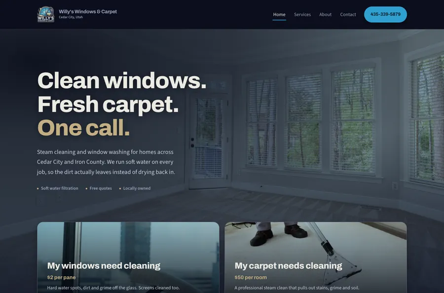
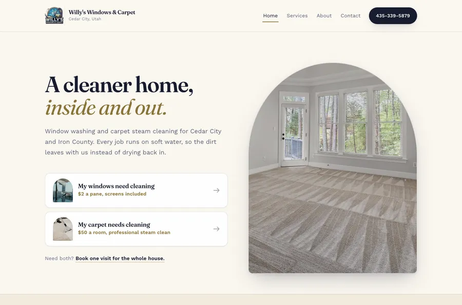
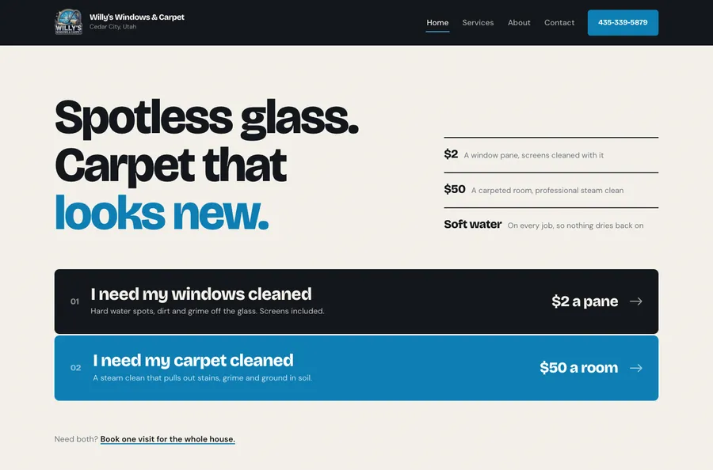

Option 1: Clearwater
Dark and photo led. The hero is a full width shot of a cleaned room, with the two choices sitting on top of it. Feels solid and professional.
Same pages, same content and the same pricing in all three. What changes is the layout, the color scheme and the type. Open each one, click around the four pages, and tell us which feels most like your business.
Option 1's layout with Option 2's lighter color scheme, and the tan accent swapped for blue. This is the one to review from here.

Dark and photo led. The hero is a full width shot of a cleaned room, with the two choices sitting on top of it. Feels solid and professional.

Light, warm and calm. The arched photo picks up the arched window in your logo. Reads as the most premium of the three, good for nicer homes.

Big, bold and direct. The two choices are full width bars you cannot miss, and the prices are the biggest thing on the page. Loudest of the three.